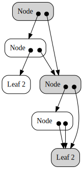
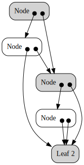

Directed Acyclic Graphs
Representing graphs
There are a few ways to represent a graph:
- as a list of Nodes and a list of edges
- as a list of neighbors
each representation is optimized for a runtime behaviour (cf Kormen) but it’s useful to abstract representation to express operations. A convenient way to abstract over those representations is shown in Fun with type function
But what if we could abuse haskell somehow to represent graph not with some external description but with haskell itself ?
Breaking referential transparency
We want to write graph that way
graph1 :: Tree IntTreeF
graph1 = iNode (iNode (iLeaf 2) a) b
where a = iNode (iNode (iLeaf 2)(iLeaf 2)) (iLeaf 2)
b = ainstead of some variation of
But normally, in Haskell there should be no way to distinguish graph1 from
from
graph2 :: Tree IntTreeF
graph2 = iNode (iNode (iLeaf 2) a) b
where a = iNode (iNode (iLeaf 2) (iLeaf 2)) (iLeaf 2)
b = iNode (iNode (iLeaf 2) (iLeaf 2)) (iLeaf 2)But we can actually abuse haskell by going to IO and relying on some implementation of GHC to observe the sharing using Type-safe observable sharing in Haskell a technique implemented and extended in data-reify
With this we can produce two different output for two values which should have been be undistinguishable.
| graph1 | graph2 |
|---|---|
|  |  |
basically the second graph is maximal sharing of subnodes. because we only ever use names like a and b once, they are irrelevant. whereas in the first case, this bottom leaf 2 is not really any leaf 2, it is the leaf which comes from a which should also be equal to b as a graph. to make sure they are equal, the equivalent relation a = b gets its own private copy which is not shared with other subgraphs.
using this we can directly represent graphs with haskell which is convienent and more visual than labeling nodes. indeed compare the code, visual, with the following ‘normal’ representation of first and second example.
T
- traversals (control - cps, mendler, launchbury coroutining fold)
- names (polymorphism)
- regions (applicative batching, compdata)